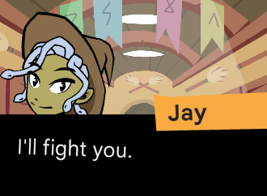
Rune Witch Academy
spellcasting RPG adventure for Google's Fitbit Ace LTE
Character
Portrait System
2D visual-novel-style character portrait system with editor tools to build expressions with animated eyes, mouth, and particle effects
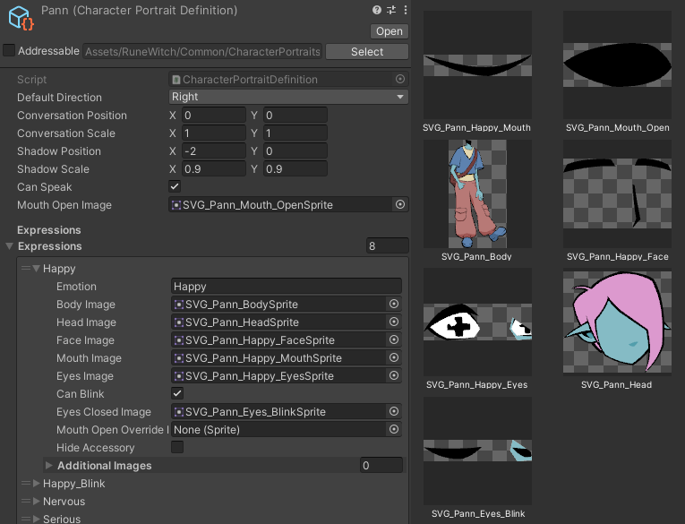
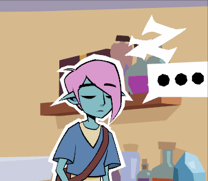
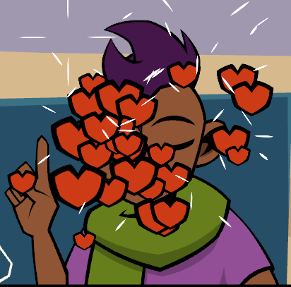
Environment
Palette Controller
A game-wide vector sprite recolouring system that replaced authored colours of a sprite with new colours based on LUTs (lookup textures) authored by the game's artists
Along with runtime blending between colour palettes, this system avoided artists manually authoring 8+ variants of every sprite in the game. This not only saved time, but also reduced the filesize of the game, which was strictly limited due to targeting smartwatches.
The system comprised multiple parts (simplified here for the sake of brevity):
| LUT authoring tool | Editor scripts for creating LUTs and saving them to Unity ScriptableObjects |
|---|---|
| Sprite shader | HLSL shader for vector sprites with support for LUT tonemapping |
| Blend shader | HLSL shader that took two LUTs and blended them into one LUT (mix, multiply, add etc.) |
| LUT blender | C# Script that took two LUTs (from LUT authoring tool) and blended them into one LUT (with Blend shader) |
| Palette controller | C# Script that took a LUT (from LUT blender) and supplied it to the Sprite shader |
With it, I was able to create...
-
a time-of-day system,
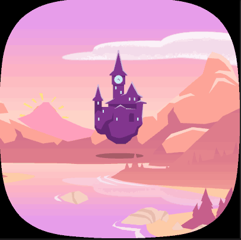
-
a weather system,
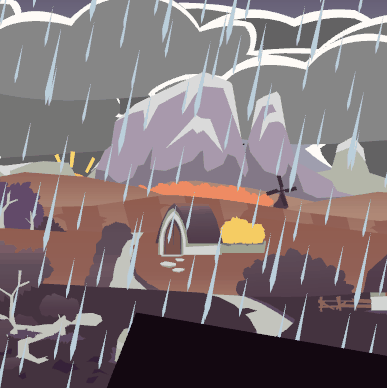
-
the opportunity for more immersive environmental storytelling,
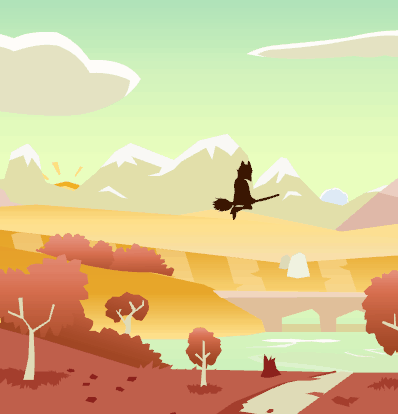
-
and the ability for artists to adjust colours in-engine without a re-export round trip.

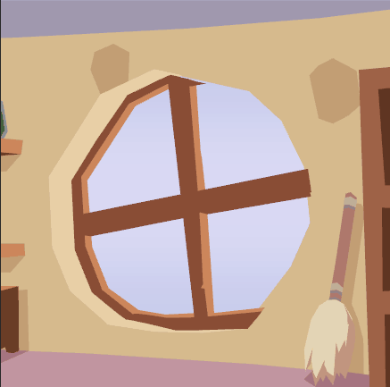
VFX
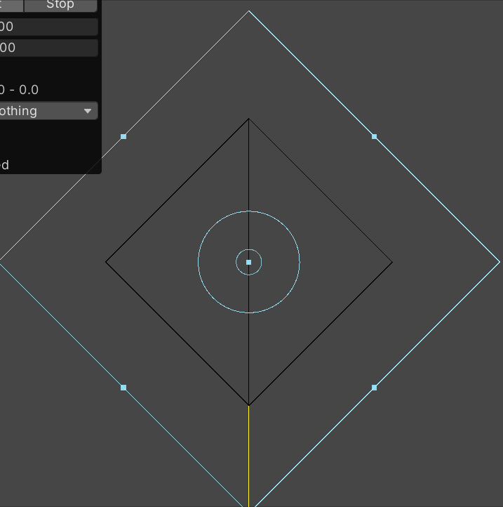
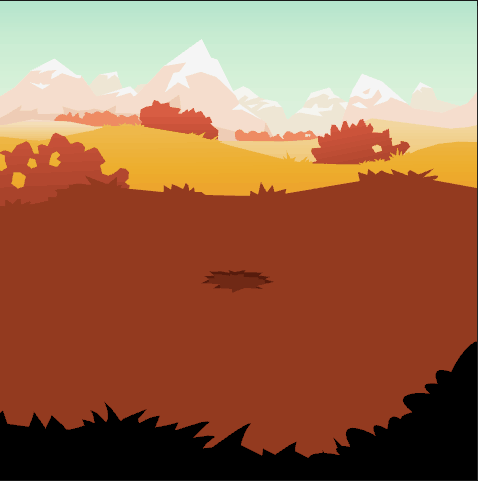
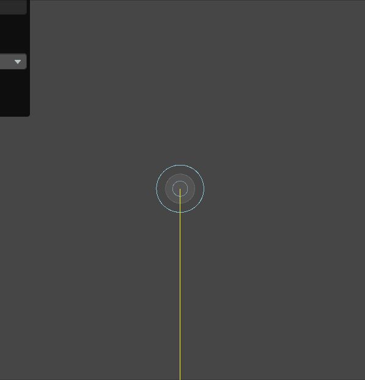
Spell visual effects were inspired by the Mother series due to the first-person perspective and, in the case of Mother 3, the small-screened nature of the games, lending to a focus on visual effects with clear and decisive feedback.
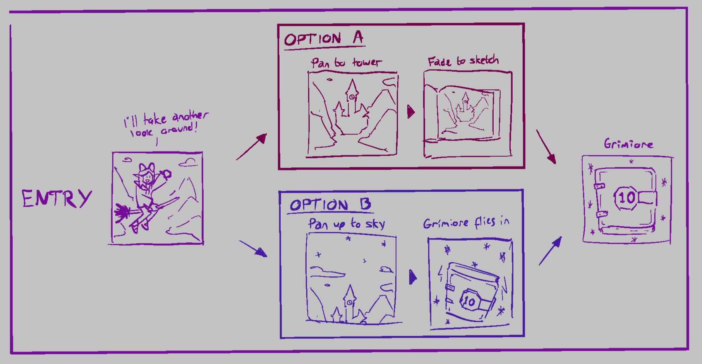
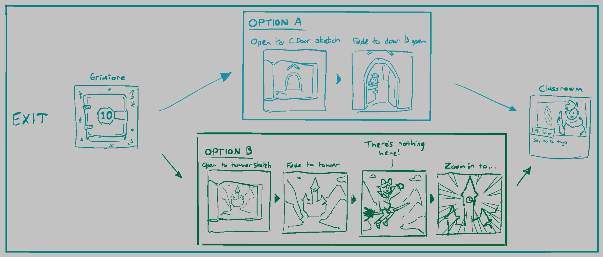
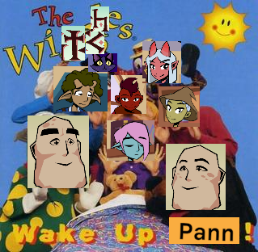